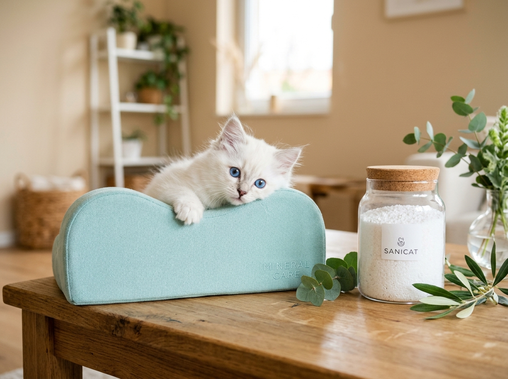

Научно-производственная компания ООО «Экософт» — пионер российских наполнителей
Фирма «Экософт» образована в 1998 году специалистами Института горного дела им. А.А. Скочинского и первой в России начала выпуск силикагелевых, двухкомпонентных минеральных и древесных наполнителей для кошачьих туалетов под торговыми марками «Экософт», «Мурзик», «Найси» и «Снежок».

Наполнитель «Мурзик-лесной» занял 1-е место по качеству в независимом конкурсе среди всех древесных наполнителей на 1-м канале телевидения.
От научных лабораторий до миллионов счастливых питомцев
1. Первые силикагелевые и 12 двухкомпонентных наполнителей
Специалисты компании разработали широкую гамму силикагелевых, минеральных и древесных наполнителей, среди которых 12 видов двухкомпонентных наполнителей, в которых в определённой пропорции присутствуют два вида сорбентов. Так, в супервпитывающих наполнителях «Мурзик-силикагель», «Снежок-силикагель» и «Экософт-силикагель» находятся крупнопористый и мелкопористый силикагели с высокой влагоёмкостью.
2. Белые гранулы силикоцеолитов «Цеолайт» (более 20 лет на рынке)
Более 20 лет назад специалисты фирмы создали наполнители «Мурзик-цеолайт» и «Снежок-цеолайт», которые производятся из природных сорбентов белого цвета с добавлением силикагеля. Природные белые гранулы силикоцеолита сочетают влагопоглощающие свойства силикагеля и цеолита, создавая максимальную чистоту в лотке.
3. Прорыв 2022 года: Влагоёмкий белый силикагель «White» и «Кошкин песок»
В 2022 году в компании был разработан новый вид супервпитывающего наполнителя — влагоёмкий силикагель белого цвета. На его основе выпускаются наполнители «Экософт-силикагель White» и «Найси-силикагель White». Белый силикагель мелкой фракции используется также в наполнителе для котят и взрослых кошек «Экософт – Кошкин песок» и в качестве важной добавки в комкующийся наполнитель «Экософт – Супер комок».
4. Высший сорт «Премиум», «Элита» и победа на Первом канале ТВ
Наполнители серии «Премиум» («Найси-силикагель Премиум», «Найси Премиум Макси», «Экософт Элита» с «изумрудными» гранулами и «Экософт Мультицвет») изготовлены из двух видов силикагелей высшего сорта и обладают наибольшей влагопоглотительной способностью по сравнению с отечественными и импортными аналогами. А древесный наполнитель «Мурзик-лесной» занял 1-е место по качеству в конкурсе на 1-м канале телевидения!
Где купить продукцию ООО «Экософт»
В настоящее время наполнители фирмы широко представлены на крупнейших маркетплейсах и в торговых сетях, а также доступны к заказу напрямую с нашего сайта без регистрации: